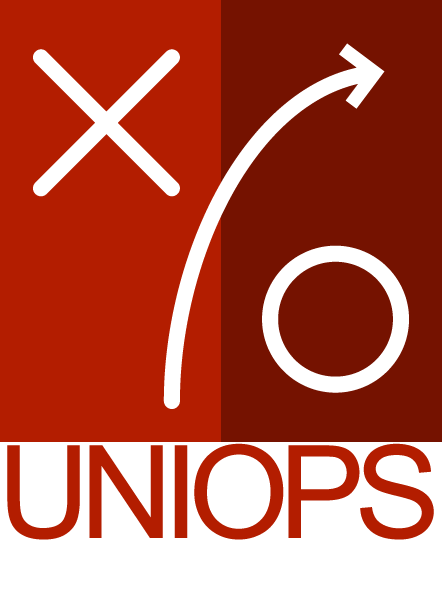

Demos & Walkthroughs
-
Offload GraphQL Queries & Mututaions to a background thread |
- Low Latency.
- Does not block the UI.
- Deals with extended calls/slow responses.
-
-
Offload Canvas/Pixel manipulation to a background thread |
-
Offload Text analysis to a background thread |